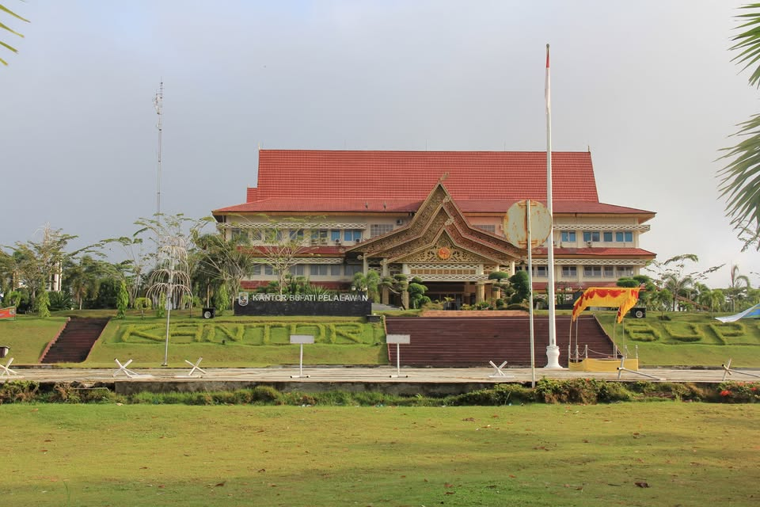
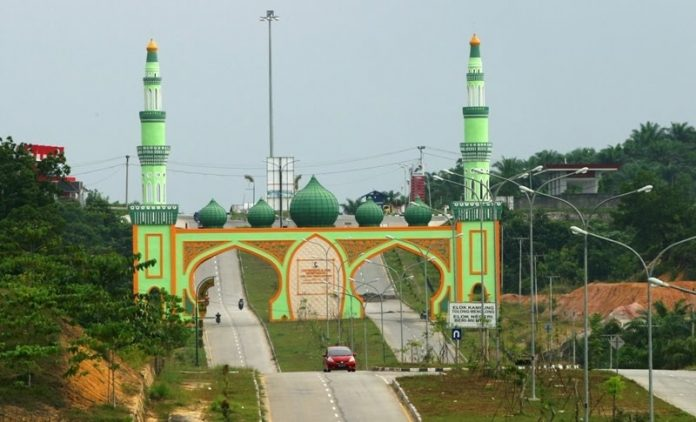
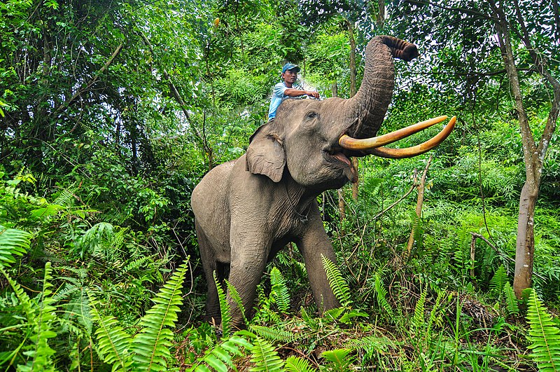
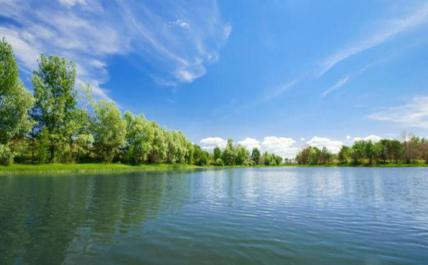

Sejarah

Kabupaten Pelalawan, yang terletak di Provinsi Riau, memiliki
sejarah yang berakar dari Kesultanan Pelalawan yang berdiri pada
abad ke-18. Kesultanan ini merupakan kelanjutan dari Kerajaan
Pekantua yang berkembang di tepi Sungai Kampar. Sebagai pusat
perdagangan dan pemerintahan di pesisir timur Sumatra, Kesultanan
Pelalawan memainkan peran penting dalam jalur perdagangan rempah dan
hasil bumi. Seiring waktu, pengaruh kerajaan mulai berkurang hingga
akhirnya wilayah ini menjadi bagian dari Republik Indonesia setelah
kemerdekaan.
Untuk meningkatkan efektivitas pemerintahan, Kabupaten Pelalawan
kemudian resmi dimekarkan dari Kabupaten Kampar pada 12 Oktober 1999
berdasarkan Undang-Undang Nomor 53 Tahun 1999. Saat ini, Pelalawan
dikenal sebagai salah satu daerah penghasil kelapa sawit terbesar di
Indonesia serta memiliki industri kehutanan yang berkembang pesat.
Selain sektor perkebunan dan industri, kabupaten ini juga memiliki
potensi wisata alam yang menarik, seperti Taman Nasional Tesso Nilo
yang menjadi habitat gajah Sumatra dan berbagai flora serta fauna
endemik lainnya.
Geografis

Kabupaten Pelalawan dengan luas 13.067,29 km², dibelah oleh aliran
Sungai Kampar, serta pada kawasan ini menjadi pertemuan dari Sungai
Kampar Kanan dan Sungai Kampar Kiri. Kabupaten Pelalawan memilik
beberapa pulau yang relatif besar yaitu: Pulau Mendol, Pulau
Serapung dan Pulau Muda serta pulau-pulau yang tergolong kecil
seperti: Pulau Tugau, Pulau Labuh, Pulau Baru Pulau Ketam, dan Pulau
Untut.
Struktur wilayah merupakan daratan rendah dan bukit-bukit, dataran
rendah membentang ke arah timur dengan luas wilayah mencapai 93 %
dari total keseluruhan. Secara fisik sebagian wilayah ini merupakan
daerah konservasi dengan karakteristik tanah pada bagian tertentu
bersifat asam dan merupakan tanah organik, air tanahnya payau,
kelembaban dan temperatur udara agak tinggi.
Wisata
Pelalawan, sebuah kabupaten di Provinsi Riau, menyimpan berbagai
destinasi wisata yang menarik, mulai dari keindahan alam hingga
situs bersejarah. Jika Anda sedang merencanakan liburan, berikut
adalah rekomendasi tempat wisata di Pelalawan yang sayang untuk
dilewatkan!
Taman Nasional Tesso Nilo

Taman Nasional Tesso Nilo adalah salah satu hutan hujan tropis
yang tersisa di Sumatra dan menjadi rumah bagi berbagai flora
serta fauna, termasuk gajah Sumatra yang terancam punah.
Pengunjung dapat menikmati berbagai aktivitas menarik seperti
trekking di hutan, mengamati satwa liar seperti gajah dan harimau,
serta mengikuti program edukasi tentang konservasi alam.
Danau Kajuid

Danau Kajuid menawarkan pemandangan alam yang asri dengan suasana
yang tenang, menjadikannya destinasi yang sempurna bagi pengunjung
yang ingin bersantai dan menikmati keindahan alam. Airnya yang
jernih mencerminkan langit biru, sementara pepohonan hijau di
sekitarnya memberikan kesejukan serta suasana yang menenangkan.
Tempat ini juga menjadi lokasi ideal untuk piknik keluarga, di
mana pengunjung dapat menikmati momen berkualitas bersama sambil
menghirup udara segar dan menikmati keindahan alam sekitar. Selain
itu, Danau Kajuid terkenal dengan panorama matahari terbenamnya
yang menakjubkan, ketika langit berubah menjadi gradasi warna
keemasan yang memantul di permukaan air, menciptakan pemandangan
yang memukau dan tak terlupakan.